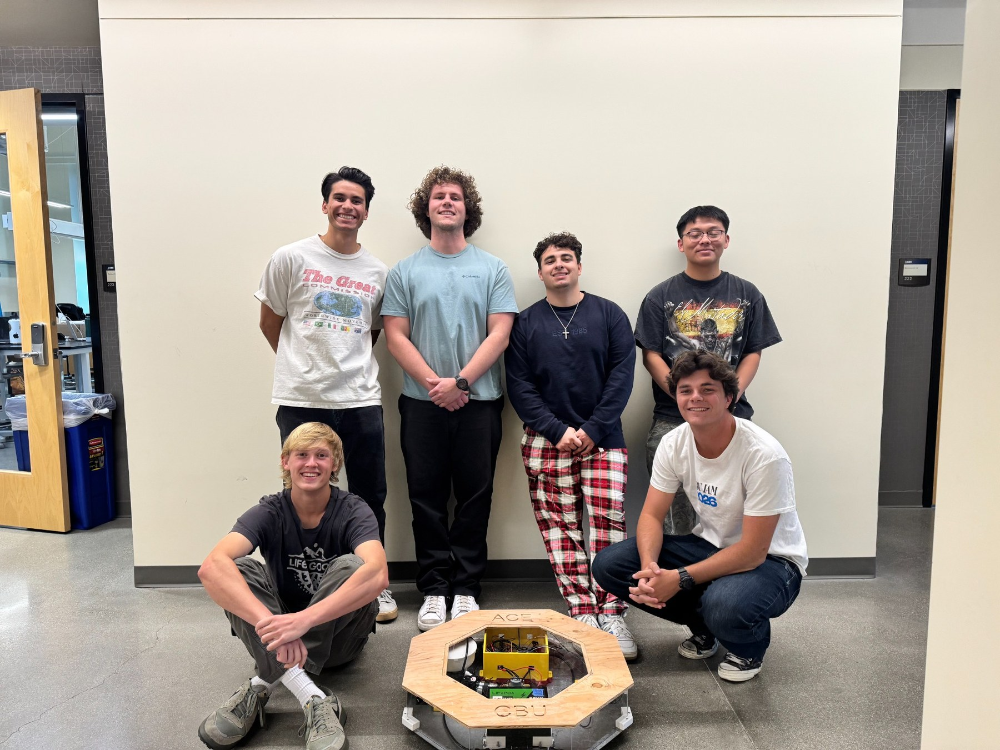
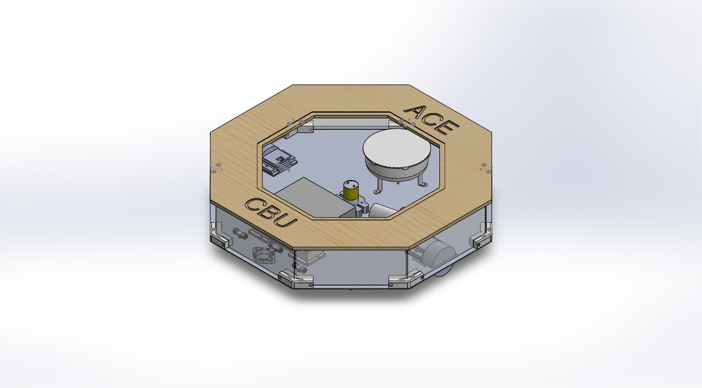
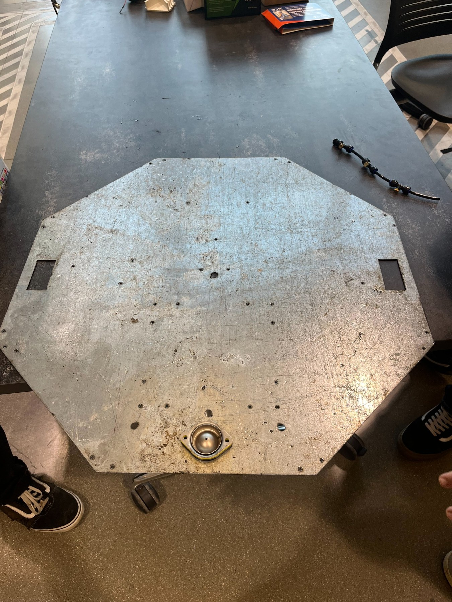
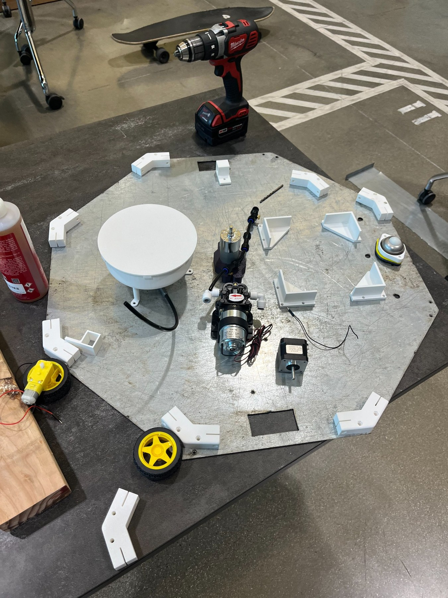
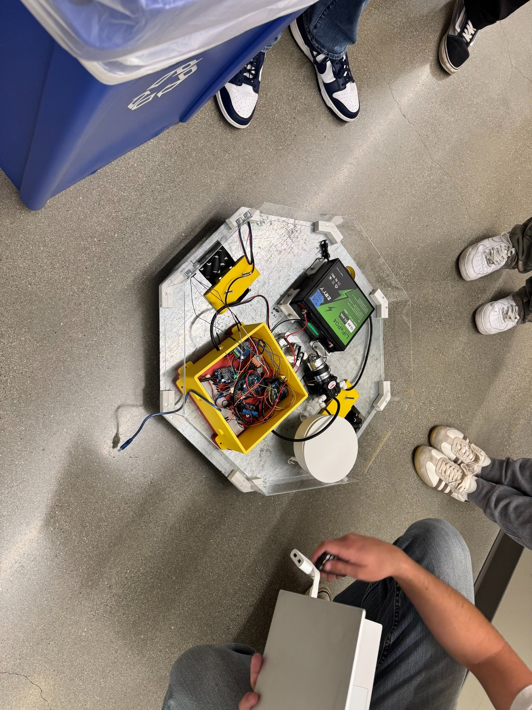
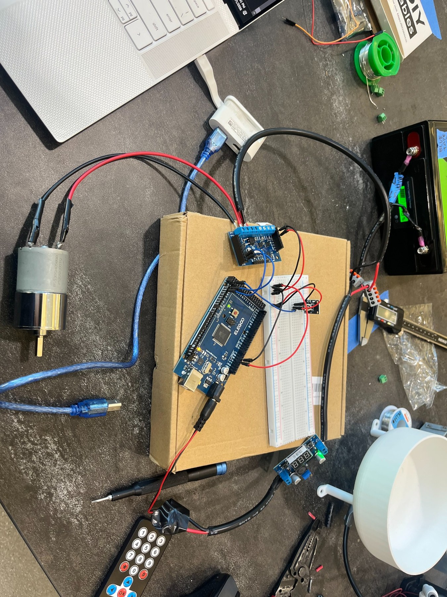
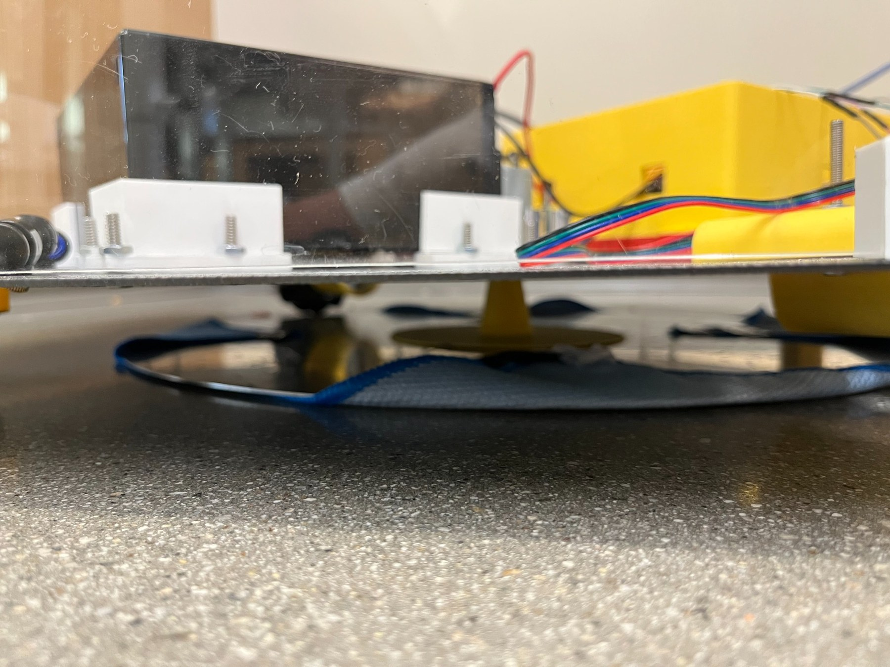
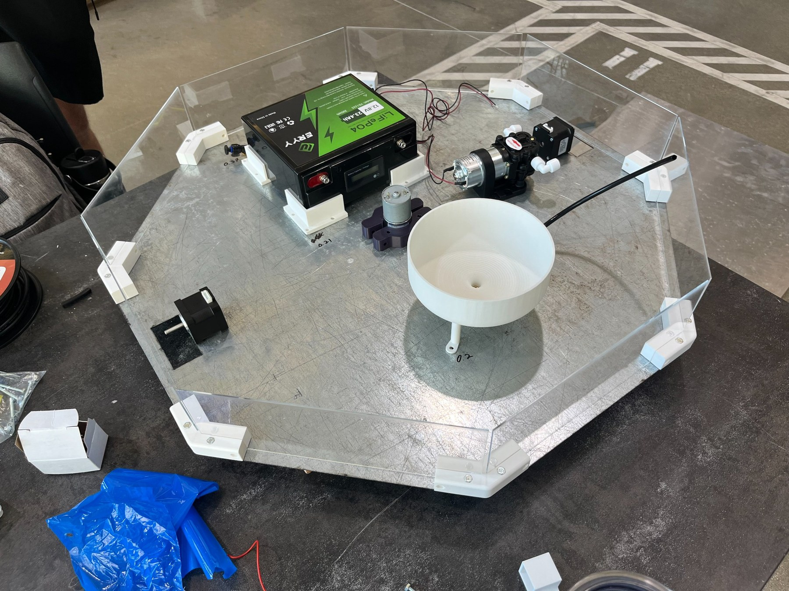
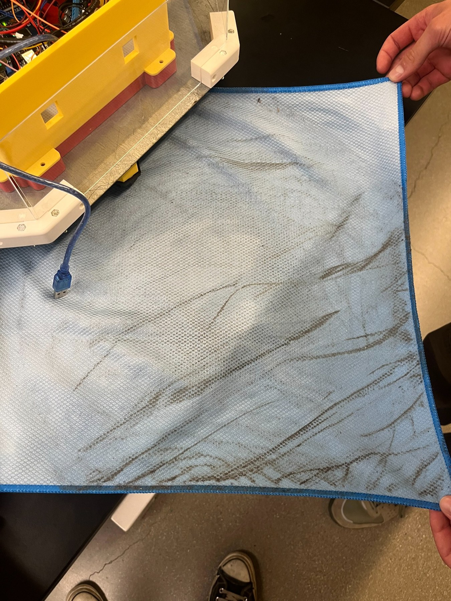

Automated Court Enhancer (ACE)
A six-person junior design project built around a basketball-court cleaner concept I proposed as an athlete. Our team spent the semester turning that idea into a working prototype that could drive, mist the floor, and scrub it with a rotating microfiber pad.

The project started from an idea I proposed because I play basketball and was tired of how much dust builds up on hardwood courts.
We divided the project across the semester, with each person responsible for different pieces of the design and documentation.
I proposed the original concept and contributed heavily to the mechanical layout, drivetrain changes, electronics, wiring, and troubleshooting as the team built the prototype.
The robot drove, misted the floor, spun the microfiber pad, and picked up a visible amount of dirt during testing.
We were asked to engineer a solution to a problem; we chose something that has been plaguing athletes for years.
Junior Design & Documentation was a semester-long class focused on developing and documenting a product using an IDEATE-style design process. I proposed an autonomous basketball-court cleaner because dirty hardwood directly affects traction, and our team developed that idea into the semester project.
Due to our teams mechanical backround, we intentionally kept navigation simple rather than turning the project into a LiDAR-heavy mapping robot. That let us focus on the machine itself: drive in a planned back-and-forth pattern, lightly mist the floor, and scrub it with a rotating microfiber pad.


We split the project across six people, and I took on several of the system-level pieces.
I proposed the original project idea and octagonal form factor. My main CAD work included the water tank and spinning-pad assembly, and I selected the pump and developed the misting concept. As the build progressed, I also became one of the main people handling electronics integration, wiring, and troubleshooting, while the rest of the team continued working on the other mechanical, documentation, and fabrication tasks.


Our cleaning concept was simple: mist in front, scrub underneath.
We used a 3D-printed water tank and pump feeding small garden-style misting nozzles at the front of the chassis. The nozzles applied a light amount of water ahead of the cleaning pad so the robot would not leave excess moisture on the hardwood.
Under the robot, a geared DC motor spun a microfiber pad against the floor. I designed the pad assembly in CAD and worked through the motor mounting while the team incorporated it into the chassis.


Our first motor choice was bad, and we had to switch gears.
We originally tried NEMA 17 stepper motors for the drivetrain. Once the robot had real weight on it, they did not produce enough useful torque to move the system reliably, along with the fact that stepper motors were not the right application at all. We should have researched that part better before purchasing hardware.
We decided on switching to geared DC motors instead, and the team adopted that change. They gave us the torque we needed and could be controlled with PWM, which later made the straight-line calibration idea possible.
This was the clearest example in the project of early component selection creating unnecessary redesign late in the semester.
We built the robot around one 12 V power system and combine it with 5 volt logic.
The final architecture used an Arduino Mega, three motor drivers for the two drive motors and cleaning-pad motor, a buck converter for lower-voltage electronics, the water pump, and a large 12 V battery. I handled most of the wiring and soldering and added an IR receiver so we could control the robot with a handheld remote during testing.
One problem remained: giving both drive motors the same PWM value did not mean both wheels actually turned at the same speed. Since our robot was supposed to follow a simple lawnmower path instead of using LiDAR, straight-line motion mattered, and we didn't have time to add encoders.
I proposed mounting two ultrasonic sensors on the same side of the robot, both facing a flat wall. We used a basic PID loop to adjust the left/right motor commands until both sensors read roughly the same distance, which meant the chassis was parallel to the wall. The program could then save those PWM values as the starting calibration for straight-line driving.
The inexpensive ultrasonic sensors were noisy, so the correction was not especially consistent, but it worked well enough to demonstrate the idea.

The final robot was not perfect, but the core cleaning idea worked.
By the end of the semester, ACE could drive under its own power, run the cleaning pad and misting system, and respond to remote commands. The motion system still had limitations, especially when relying on inexpensive ultrasonic sensors instead of wheel encoders or better distance sensing.
The most convincing result was also the simplest one: after running the robot, the microfiber pad came back visibly loaded with dirt from the floor.

What worked
- Original cleaning concept and full prototype architecture
- 12 V power system and Arduino-based electronics
- Geared-DC drivetrain after the stepper redesign
- Water misting and spinning microfiber cleaning system
- IR remote control for testing
- Basic ultrasonic/PID straight-line calibration concept
- Visible dirt collection during cleaning tests
What we would improve
- Size the drivetrain correctly from the beginning
- Add wheel encoders or higher-quality distance sensors
- Package the electronics more cleanly
- Refine pad loading/contact with the floor
- Spend more time on repeatable autonomous path testing
This was my first project where I had to work across mechanical design, electronics, wiring, motors, sensors, and software while also coordinating those pieces with a team. It taught me a lot about integration, and it reinforced that a simple design with clear constraints is usually better than adding features just because they sound more advanced.